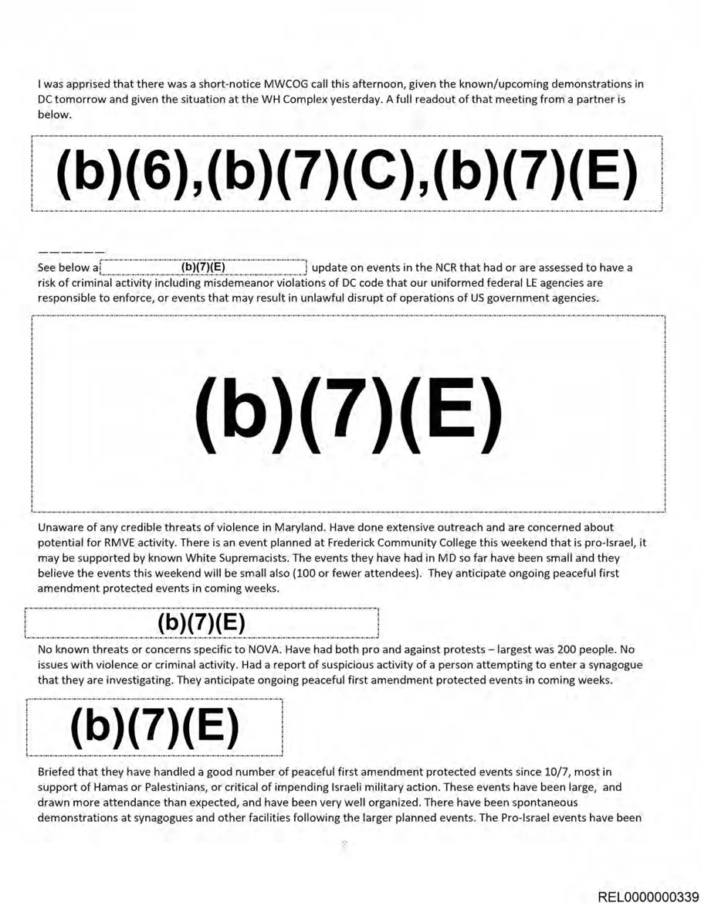
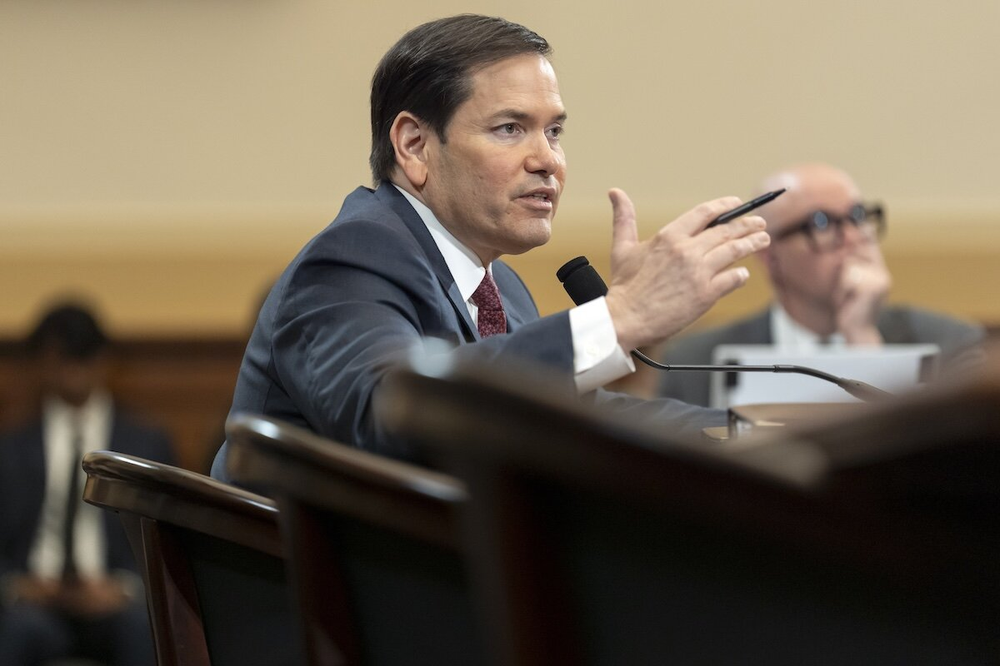

AI Surveillance
Government Efforts in Preventing Palestine Protest

The FPS, alongside other federal agencies, watched Black Lives Matter marches across the country. They also monitored on protests that occurred after the Supreme Court dismissed Roe v. Wade, according to a different set of FOIA documents I received. After Hamas launched an attack on southern Israel last October, I submitted a Freedom of Information Act request to discover if any of the protests had been reported to the agency. FPS answered with approximately 100 pages of emails, images, and videos. The data present an inside look at the government's response to early protests, as well as evidence of how the government has become more effective in its monitoring of protesters. They also reveal officials who are very concerned that protest would become violent.
FPS inspectors, as they are known, informed agency authorities that numerous of planned protests in several cities and on a few university campuses may attract white supremacists and a form of domestic terrorist known as "racially motivated violent extremists," or RMVEs.
According to the documents, agency analysts monitor social media posts and online message boards to get the raw "intelligence" that underlies FPS danger evaluations. One email also illustrates how another DHS agency, Homeland Security Investigations (HSI), on Oct. 21, observed a protest at the Washington Monument after discovering about it through Facebook and Instagram posts.

While freely accessible surveillance has long been common in law enforcement, technological developments have given the government an advantage. For example, the records indicate that FPS employed Dataminr, an artificial intelligence software startup that "detects the earliest signals of high-impact events and emerging risks from publicly available data," to track Israel-Hamas war protests.
US Revoking Student Visa’s over Pro-Palestine Media Content
According to Axios, the US State Department will utilize artificial intelligence to deny visas for international students perceived to be Hamas supporters. In January, Donald Trump issued an executive order to fight antisemitism and has promised to deport foreign university students and others who participated in pro-Palestinian protests that have been occurring for months throughout Israel's military bombardment on Gaza following Hamas' October 2023 attack.
According to Axios, the "catch and revoke" initiative will entail AI-assisted assessments of tens of thousands of student visa applicants' social media accounts. Officials will also review news stories from earlier protests against Israel's policies, as well as lawsuits filed by Jewish students naming foreign nationals accused of antisemitism. Some pro-Palestinian groups are Jewish, and many protestors have condemned antisemitism and Hamas. However, antisemitism and Islamophobia have been reported in both pro-Palestinian and pro-Israeli counter-protests.

Advocates are concerned that utilizing artificial intelligence for surveillance may result in errors, misidentifications, and privacy violations. "This should alarm every American. "This is a first amendment and free speech issue, and the administration will overplay its hand," said Abed Ayoub, executive director of the American Arab Anti-Discrimination Committee. "Americans will not like this. They'll see this as giving up free speech rights for a foreign nation."
Trump has stated that he will suspend government funding for educational institutions that enable what he considers illegal protests. "Agitators will face imprisonment or permanent deportation to their home nation. "American students will be permanently expelled or arrested," Trump stated on Tuesday.
On Tuesday, the American Civil Liberties Union issued an open letter encouraging colleges and universities to resist federal efforts to implement surveillance or punish international students or professors who participated in campus protests. The group claimed that the protests were legally permitted free expression."It is disturbing to see the White House openly threatening free speech and academic freedom on US college campuses," said Cecillia Wang, the ACLU's legal director and co-author of the letter. "Trump's latest intimidation campaign, aiming to turn university administrators against their own students and faculty, refers back to the McCarthy period and is at clash with American constitutional principles and the fundamental objective of universities."
According to Gaza officials, Israel's following military assault killed about 48,000 Palestinians. It has internally displaced practically everyone, prompting claims of genocide and war crimes, which Israel rejects.
Trump Administration Tracks Foreign Students Media Data
International students are removing social media posts and accounts as the Trump administration toughens visa requirements and broadens digital surveillance. The policy raises concerns about unjust monitoring and encourages young people to self-censor online.
Every year, over 50,000 students from Sub-Saharan Africa travel to the United States to study, with China and India sending many more. In 2024, approximately 20,000 Nigerian students attended university in the United States, the biggest number from any African country. The United States is a popular location for foreign students due to its post-degree job opportunities.
In May, US Secretary of State Marco Rubio directed embassies to cease arranging new visa appointments, stating that the Trump administration will reassess the process and tighten verification of students' social media presence. The decision is part of a larger assault on overseas students, with the administration attempting to cancel visas and increase deportations of students.
Since 2019, most US visa applicants are obligated to provide their social media credentials, such as Facebook or X usernames. However, Mr. Rubio's proposal increases the investigation that applicants will endure, raising concerns about digital surveillance and applicants' data privacy, based on digital rights lawyers. They anticipate that the level of inspection currently being considered could set a hazardous pattern for digital surveillance in immigration cases.
Examining visa applicants' social media habits as a component of the immigration process breaches the boundary between valid security concerns and unnecessary digital surveillance, according to Khadijah El-Usman, a digital rights lawyer with Paradigm Initiative, a pan-African social business.
Ms. El-Usman explained that monitoring applicants upon their online activity could lead to harmless posts on X or Facebook being misconstrued and applicants being denied visas based on their viewpoints or political humor. "We've seen how even social media companies, which are mostly based in the United States, misinterpret posts. What implies is that attempts at humor or political satire might be wrongly identified as security threats,” Ms. El-Usman said.
Digital rights activists voiced that the United States' approach could lead other governments to integrate digital surveillance as an element of immigration procedures. If this transpires, all social media members are at jeopardy of being falsely profiled, said Mojirayo Ogunlana, executive director of Nigeria-based DiGiCiVic Initiative.